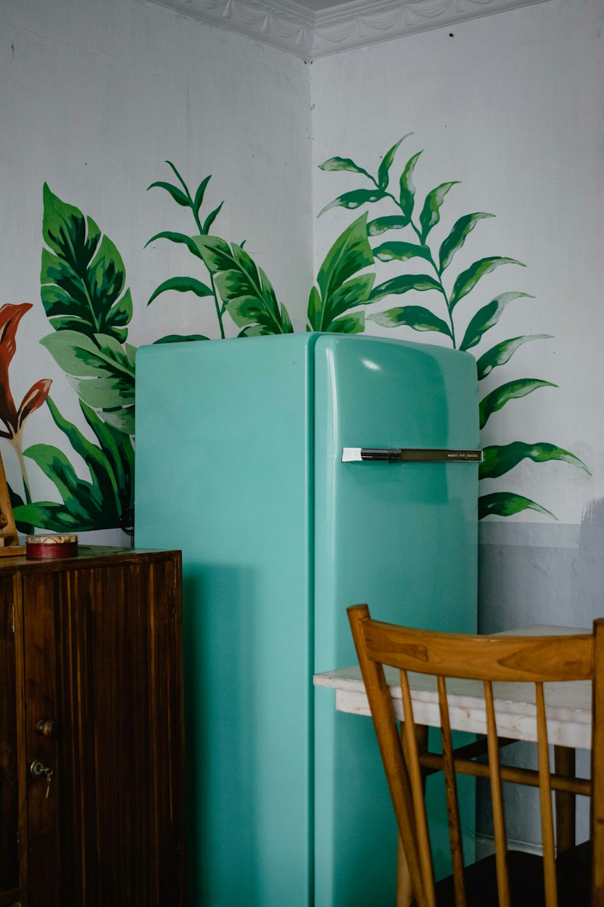
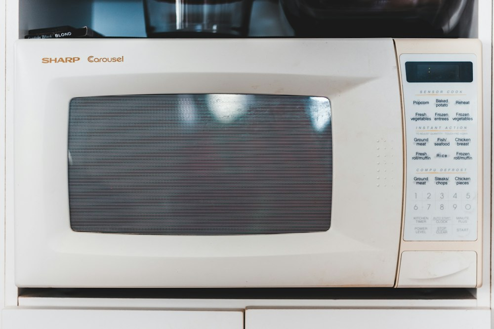
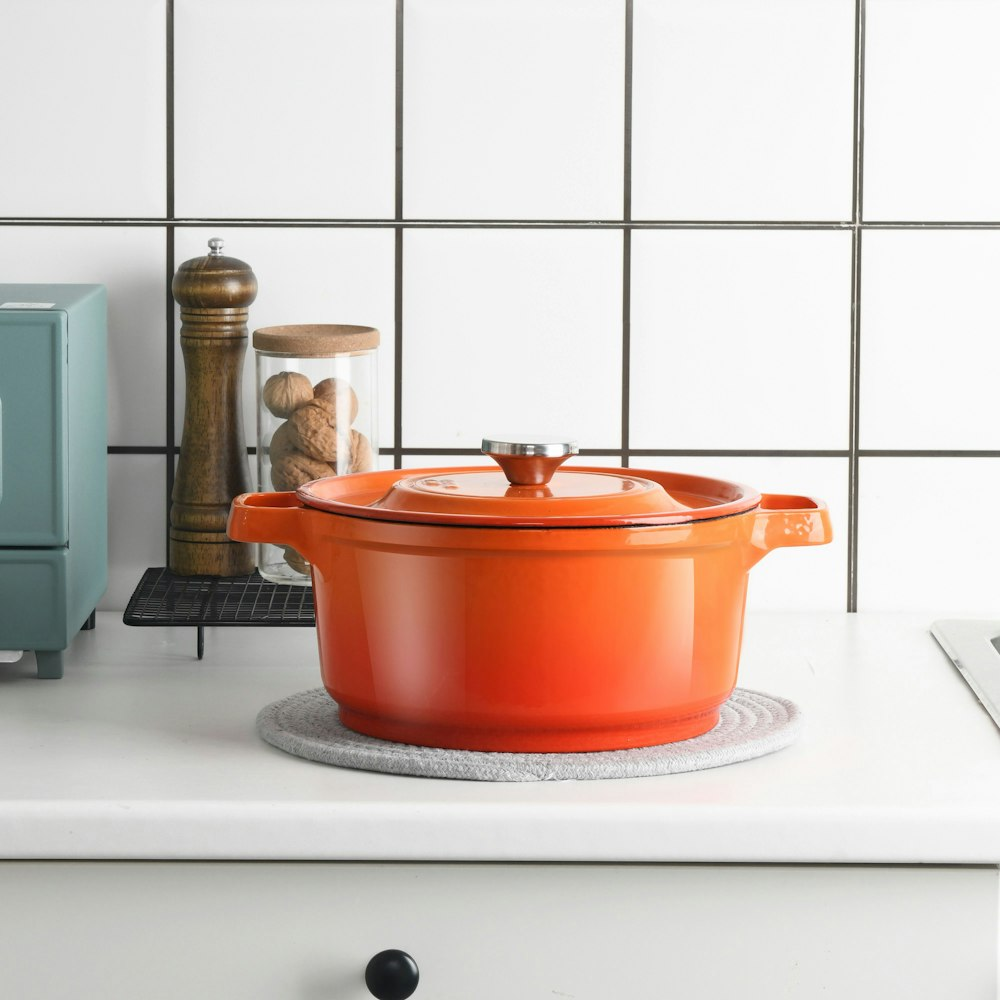
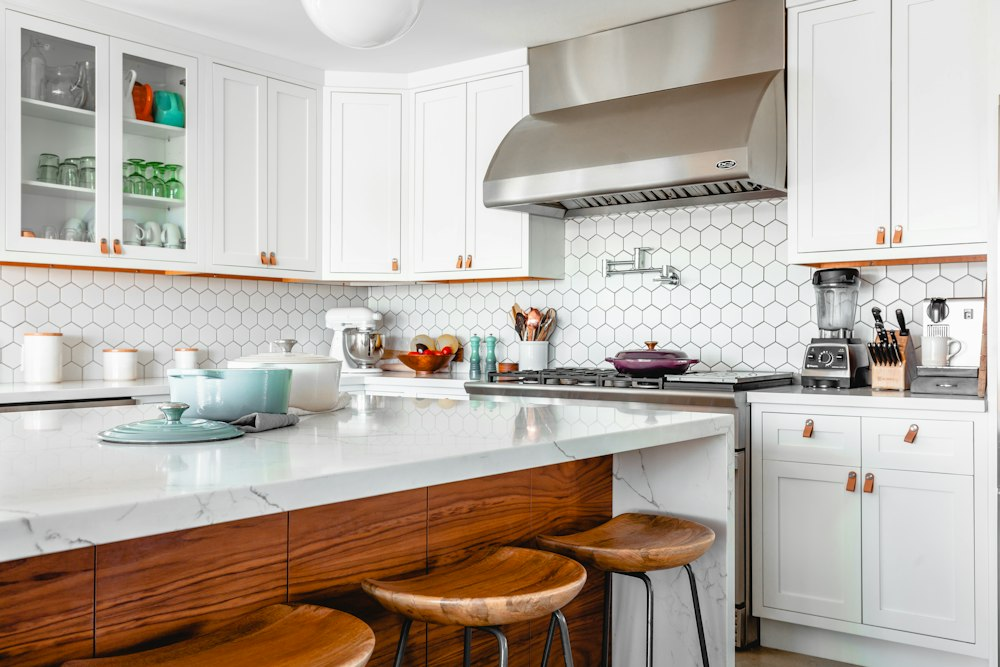

Refrigerator Repair
We diagnose cooling inconsistencies, frozen fresh-food compartments, continuous compressor hums, defrost system sensor failures, and water dispenser leaks.
From food preservation systems to high-efficiency laundry equipment and kitchen cooking suites, we troubleshoot and repair all major residential appliances across San Jose and neighboring cities.

Select any appliance below for detailed information on common failure symptoms, diagnostic procedures, and what our service covers.
We diagnose cooling inconsistencies, frozen fresh-food compartments, continuous compressor hums, defrost system sensor failures, and water dispenser leaks.

Expert solutions for standing water in the tub, faulty door latch microswitches, defective spray arms, failing wash circulation pumps, and cloudy glassware.

Addressing spin cycle failure, loud agitator squeaks, tub unbalance errors, door boot gasket mold or tears, and clogged drain filter assemblies.

Precision repair for electric heating coils, gas burner coils, snapped drum belts, worn idler pulleys, failed thermal cutoffs, and moisture sensors.

Restoring accurate oven thermostat calibration, replacing burned bake and broil elements, safety valve testing, and electronic relay board repair.

Resolving clicking gas spark modules, weak burner flames, radiant glass cooktop switch issues, faulty temperature limiters, and loose surface coils.

Comprehensive diagnostics for combined cooktop and baking range appliances, including dual-fuel systems, slide-ins, and freestanding ranges.

Protecting frozen foods with prompt diagnosis of defrost timer failure, evaporator coil icing, run capacitor breakdown, and magnetic door seal leaks.

Modern household appliances have evolved into sophisticated electromechanical devices. Randomly swapping parts without testing leads to unnecessary expenses and unresolved issues.